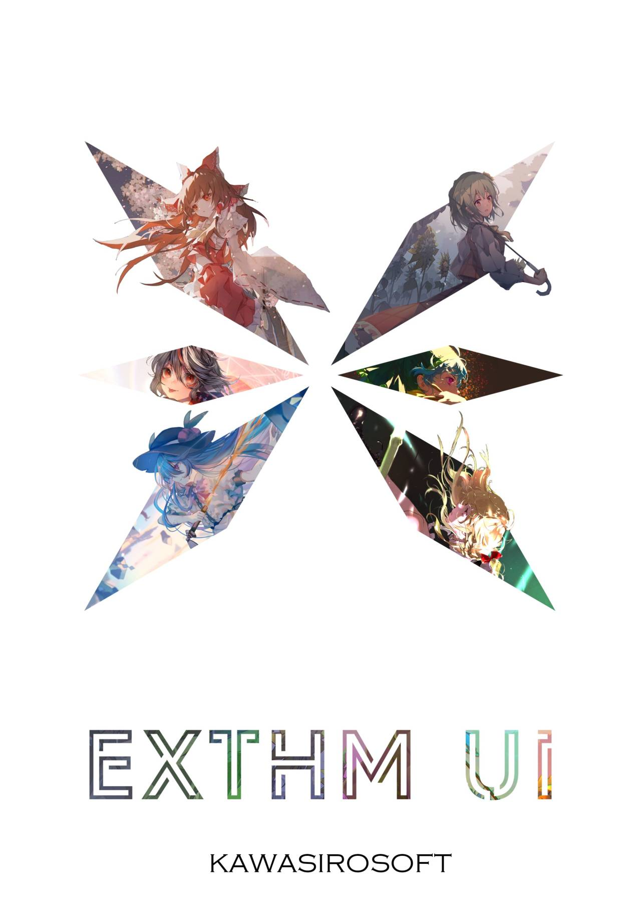

- 介绍
- exTHmUI Project，是一个基于LineageOS，完全开源且免费的东方化安卓类原生操作系统
- 开源
- exTHmUI的源代码公开在GitHub上，任何人都可以贡献或查看。
- 功能
- exTHmUI 内置了基于OMS修改的ThemeManager主题引擎，主题设计师可参照设计文档进行主题制作；用户只需安装一个与Substratum主题类似的安装包即可使用主题。
exTHmUI 对部分界面的UI进行定制，相比普通类原生，exTHmUI 的界面更为精致、简洁
- 深度定制的主题引擎
- exTHmUI 内置了基于OMS修改的ThemeManager主题引擎，主题设计师可参照设计文档进行主题制作；用户只需安装一个与Substratum主题类似的安装包即可使用主题。
- 捐赠与维护
- exTHmUI 内置了很多本地化功能，并且在UI上也有较深定制，但有些功能，比如系统更新服务、服务器运维、快递查询服务等，这是需要经费维护的，我编不下去了。。。